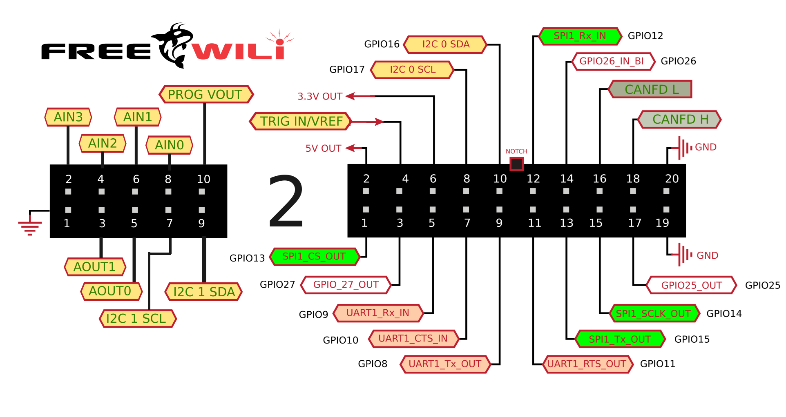

Expanded GPIO
FREE-WILi 2 keeps the 20-position Orca connector from FreeWili1, preserving compatibility with the full library of existing Orcas. A brand-new 10-position connector extends the ecosystem with additional IOs that are primarily oriented toward analog functions, and mechanical fastening posts let Orcas attach rigidly — no flex, no intermittent connections. The I2C translator also received a speed upgrade, reducing latency on any peripherals that live on that bus.
One of the most requested fixes from FreeWili1 was simpler IO-voltage configuration, and FREE-WILi 2 delivers: software can now select from four voltage sources (the 5 V rail, the 3.3 V rail, the IO pin as in FreeWili1, or the new programmable power supply), and an ADC continuously reads the actual IO voltage so firmware always knows what’s present.
Finally, an EEPROM in the Orca allows FREE-WILi 2 to automatically detect, configure, and persist Orca-related settings — plug in a new Orca and the device knows exactly what it’s dealing with, without manual setup.

Key facts
- Legacy
- 20-pos, Orca-compatible
- New
- 10-pos analog connector
- IO voltage
- 4 selectable sources + ADC readback
- Orca
- EEPROM auto-config